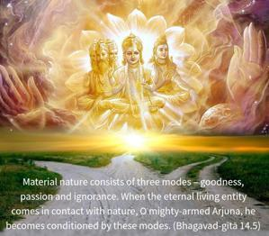
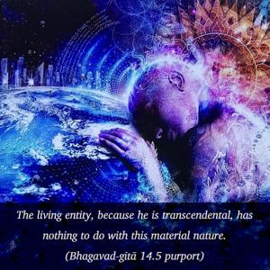
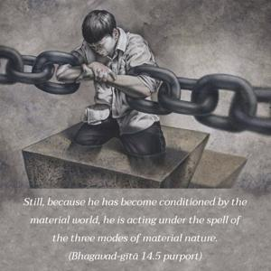

Material nature consists of three modes – goodness, passion and ignorance. When the eternal living entity comes in contact with nature, O mighty-armed Arjuna, he becomes conditioned by these modes.



The living entity, because he is transcendental, has nothing to do with this material nature. Still, because he has become conditioned by the material world, he is acting under the spell of the three modes of material nature. Because living entities have different kinds of bodies, in terms of the different aspects of nature, they are induced to act according to that nature. This is the cause of the varieties of happiness and distress.